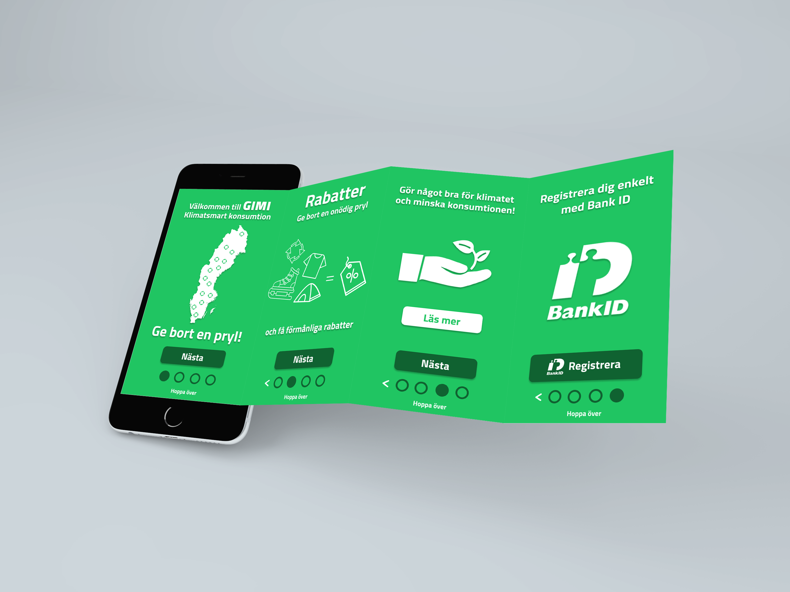
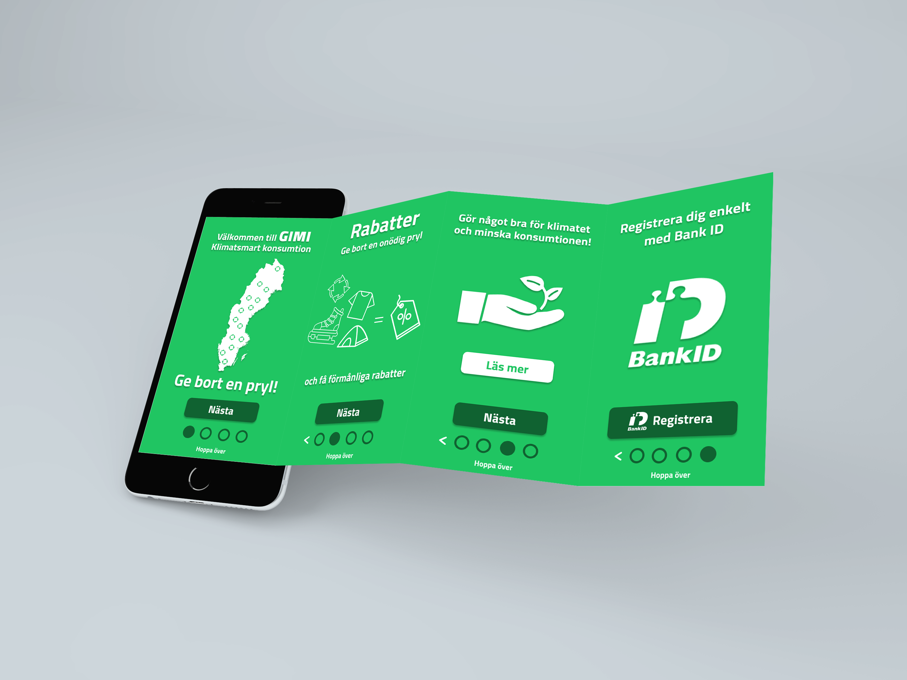
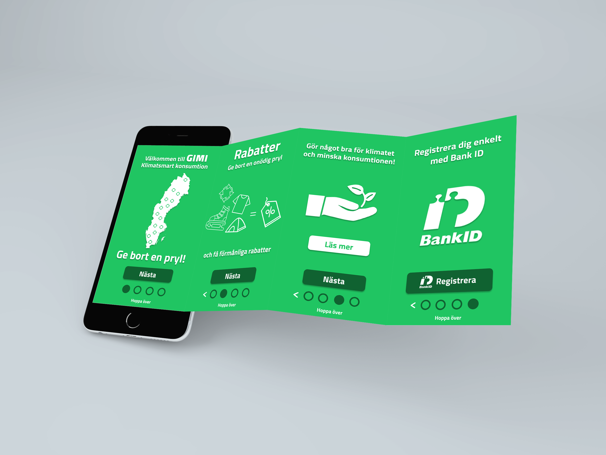

UX-projekt i min utbildning där uppgiften bestod av att ta fram en dejtingapp utifrån en befintlig beskrivning. Denna var: “Pixer är en dejtingapp/sajt där användarna behöver prata/chatta med varandra för att steg för steg låsa upp bilder/delar av en bild på personen de chattar med. I stället för att “matcha” baserat på bilder, så får man chansen att först prata med personen innan bilderna har betydelse. På så vis så behöver man “matcha” de man är intresserade av baserade på deras intressen och vad de skriver”
UX-projekt i min utbildning med fokus mot att utveckla en app som skulle bidra till en klimatsmart vardag. Processen innefattades av en större undersökande fas där vi försökte ta reda på vilka funktioner som skulle behövas och hur detta skulle tas emot av användarna. Resultatet blev GIMI, där användarna skänker och tar emot prylar av varandra i utbyte mot svinnsmarta rabatter. Genom användningen av BankID ges en seriös användarbas där appen drivs av att det laddas upp nya prylar som ligger och skräpar i hemmet. Företag som jobbar med svinn på olika sätt ska kunna registrera sig och kunna erbjuda rabatter till dem som ger bort sina prylar. Detta ska bidra till att prylar fortsätter laddas upp efterhand och rabatterna också kan bli mer omfattande.
